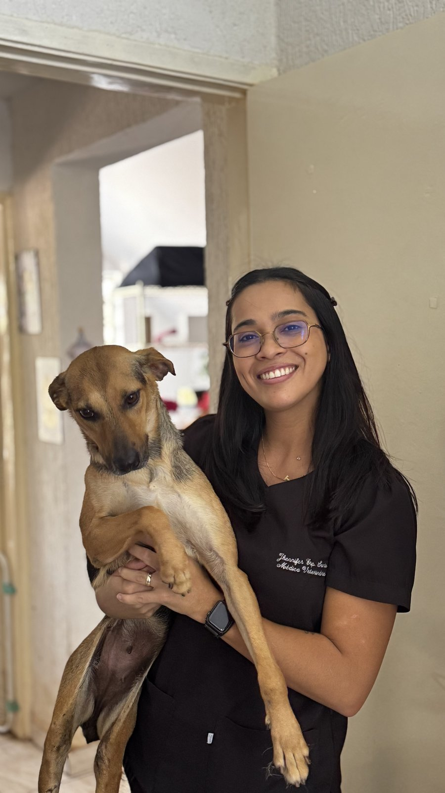
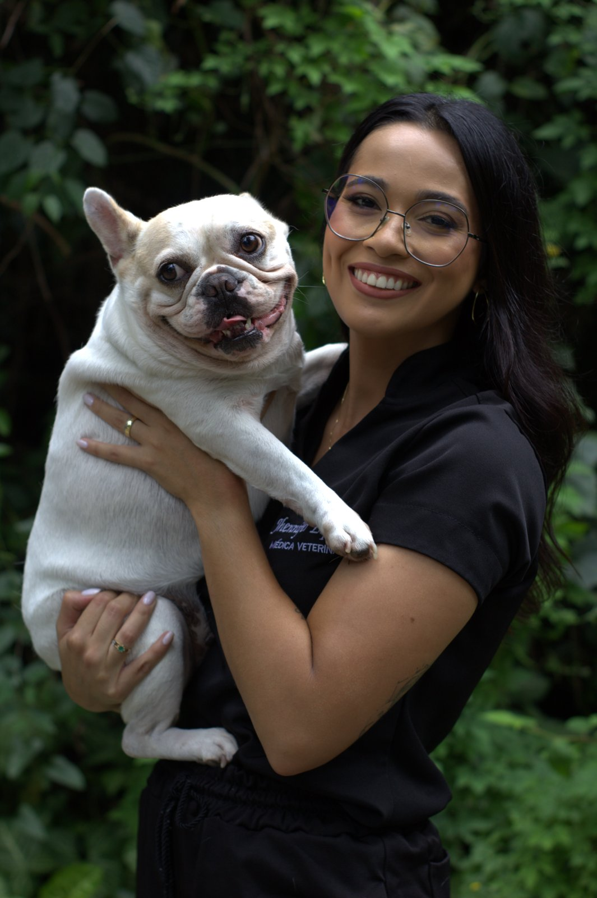

Cuidado clínico e reabilitação física, acompanhados de perto.
O atendimento presencial reúne duas frentes complementares: fisiatria veterinária, para dor e mobilidade, e clínica médica integrativa, para o cuidado de rotina. Ambas seguem a mesma lógica: entender a causa, não só tratar o sintoma.


Fisiatria veterinária
Para quem é: pets em recuperação pós-cirúrgica, animais idosos, pacientes com dor crônica, artrose, hérnia de disco ou perda de mobilidade progressiva.
Como funciona: avaliação física e funcional completa, definição de um plano terapêutico (que pode incluir acupuntura, terapias manuais, exercícios dirigidos e recursos físicos) e acompanhamento da evolução sessão a sessão.
O diferencial: a fisiatria aqui não é isolada — dialoga com a visão integrativa da Jhennifer, olhando alimentação, dor e qualidade de vida como parte de um mesmo plano.
Clínica médica integrativa
Para quem é: consultas de rotina, check-ups, investigação de sintomas e acompanhamento clínico contínuo do pet.
Como funciona: consulta clínica completa, solicitação de exames quando necessário, e um plano de tratamento que pode combinar medicina convencional com recursos naturais, sempre que isso beneficiar o paciente.
O diferencial: nenhuma solução genérica — o plano é construído para a realidade daquele pet e daquele tutor.
Do primeiro contato à primeira consulta.
Contato inicial
Você chama no WhatsApp comercial e conta rapidamente o que está acontecendo com o seu pet.
Triagem
A equipe identifica se o caso é de fisiatria, clínica médica, ou os dois — e já orienta os próximos passos.
Agendamento
Você escolhe o melhor horário e recebe as orientações de preparo para o dia da consulta.
Consulta presencial
Avaliação completa com a Jhennifer, definição do plano de cuidado e próximos passos claros.
Seu pet merece um plano feito para ele.
Fale com a equipe e agende uma avaliação.
Agendar pelo WhatsApp